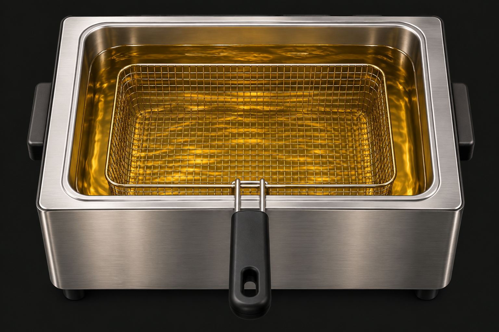

DEEP FRY PLAYGROUND
이것도 튀겨볼까?
기름 예열 완료
02
바삭하게 튀기기
180°C
재료 대기석

이미지를 잡고 기름 위로!
잡아보세요 ↗
바사삭…너무 바삭해서, 가루가 되어버렸다.
DRAG 꾹 잡고 기름 위에 머물러보세요
바삭한 정도
아직 생생해요0%
생재료노릇노릇바삭!앗, 탄다
튀긴 시간00.0초
빵가루 3겹 · 노릇해지면 꺼내보세요